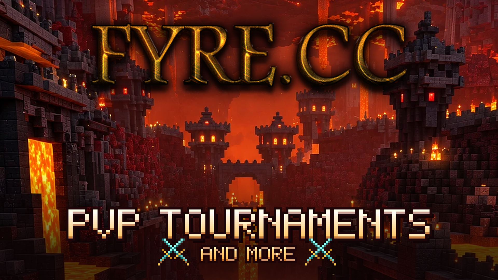
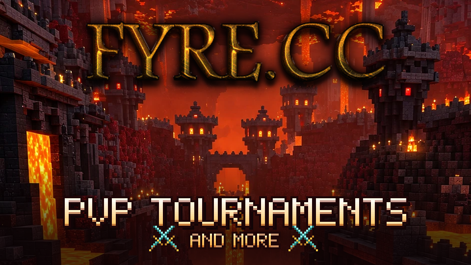

<title>Fyre Banner Board</title>
<meta name="claude:viewport-fit-sides" content="cover">
<link rel="stylesheet" href="https://fonts.googleapis.com/css2?family=Silkscreen:wght@400;700&family=Chakra+Petch:wght@400;600&family=JetBrains+Mono:wght@400&display=swap">
<style>
/* Layout: one dark Nether-stone column; the banner leads, sizes and a crop check follow. Deliberately single dark theme. */
:root {
  --bg: #170b0b;
  --slab: #241212;
  --line: #3d1d1a;
  --fg: #f4e3d4;
  --muted: #b39283;
  --lava: #ff8a1f;
  --display: "Silkscreen", "Courier New", monospace;
  --body: "Chakra Petch", system-ui, sans-serif;
  --mono: "JetBrains Mono", ui-monospace, monospace;
  color-scheme: dark;
}
body { background: var(--bg); color: var(--fg); font: 16px/1.5 var(--body); }
main {
  max-width: 1000px; margin: 0 auto;
  padding-block: 40px 64px;
  padding-left: max(16px, env(safe-area-inset-left, 0px));
  padding-right: max(16px, env(safe-area-inset-right, 0px));
  display: grid; gap: 32px;
}
header { display: grid; gap: 6px; }
h1 { font: 700 clamp(28px, 6vw, 44px)/1 var(--display); color: var(--lava); margin: 0; letter-spacing: .02em; }
header p { margin: 0; color: var(--muted); max-width: 62ch; }
section { display: grid; gap: 12px; }
.head { display: flex; flex-wrap: wrap; align-items: baseline; justify-content: space-between; gap: 4px 16px; }
h2 { font: 400 15px/1.2 var(--display); letter-spacing: .06em; margin: 0; }
.spec { font: 13px/1.4 var(--mono); color: var(--muted); font-variant-numeric: tabular-nums; }
img { display: block; image-rendering: pixelated; max-width: 100%; height: auto; }
.hero { border: 1px solid var(--line); }
.files { display: grid; gap: 1px; background: var(--line); border: 1px solid var(--line); }
.file { background: var(--slab); display: flex; flex-wrap: wrap; justify-content: space-between; gap: 4px 16px; padding: 12px 14px; }
.file code { font: 14px var(--mono); color: var(--fg); }
.file span { font-size: 14px; color: var(--muted); }
.crops { display: grid; grid-template-columns: repeat(auto-fit, minmax(240px, 1fr)); gap: 16px; }
.crop { display: grid; gap: 8px; }
.crop .frame { overflow: hidden; border: 1px solid var(--line); background: var(--slab); }
.crop .frame img { width: 100%; }
.crop.sidebar .frame { aspect-ratio: 240 / 135; max-width: 100%; }
.crop.sidebar .frame img { width: 100%; height: 100%; object-fit: cover; }
.crop.wide .frame { aspect-ratio: 3 / 1; max-width: 100%; }
.crop.wide .frame img { width: 100%; height: 100%; object-fit: cover; }
.crop p { margin: 0; font-size: 14px; color: var(--muted); }
footer { color: var(--muted); font-size: 14px; border-top: 1px solid var(--line); padding-top: 16px; }
code { font-family: var(--mono); font-size: .92em; color: var(--fg); }
</style>

<main>
  <header>
    <h1>FYRE</h1>
    <p>Brand banner for the Fyre lava PvP server: the gold FYRE.CC logo over a Nether fortress canyon, with the tagline PVP TOURNAMENTS AND MORE between crossed diamond swords.</p>
  </header>

  <section>
    
  </section>

  <section>
    <div class="head"><h2>Files</h2><span class="spec">PNG · 16:9 · in branding/fyre/</span></div>
    <div class="files">
      <div class="file"><code>fyre-banner-1920x1080.png</code><span>Sharpest. Use this anywhere that accepts it.</span></div>
      <div class="file"><code>fyre-banner-960x540.png</code><span>Discord's minimum server-banner size.</span></div>
    </div>
  </section>

  <section>
    <div class="head"><h2>Crop check</h2><span class="spec">how other shapes cut it</span></div>
    <div class="crops">
      <div class="crop sidebar"><div class="frame"></div><p>Discord sidebar, 16:9. Shows the whole image.</p></div>
      <div class="crop wide"><div class="frame"></div><p>3:1 header strip. The logo stays whole but the tagline gets cut, so this shape needs its own layout.</p></div>
    </div>
  </section>

  <footer>Source: <code>branding/fyre/make-fyre-banner.py</code>. Rebuild with <code>python3 make-fyre-banner.py --bg fyre-background.webp --logo fyre-logo.png</code>; <code>--bg-top</code> moves the crop, <code>--sub</code> and <code>--sub2</code> change the tagline.</footer>
</main>
